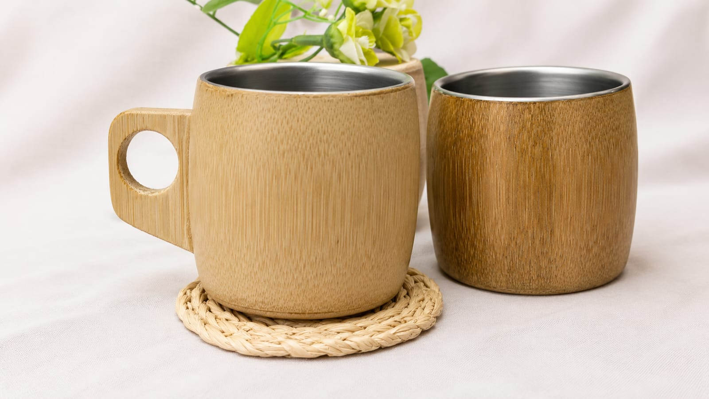
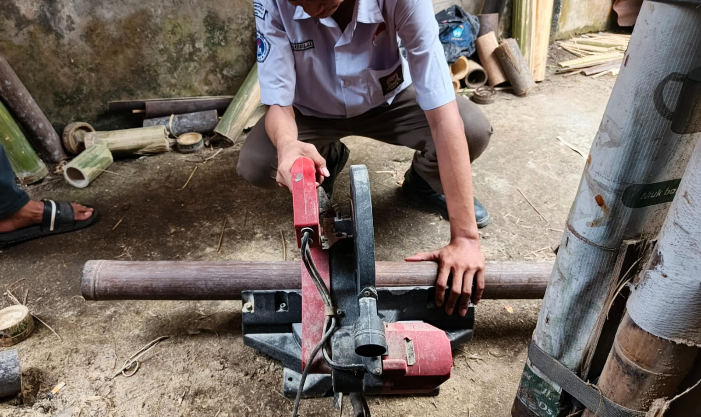
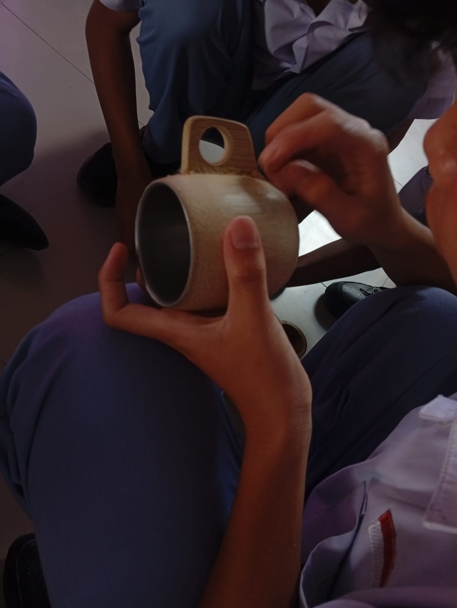
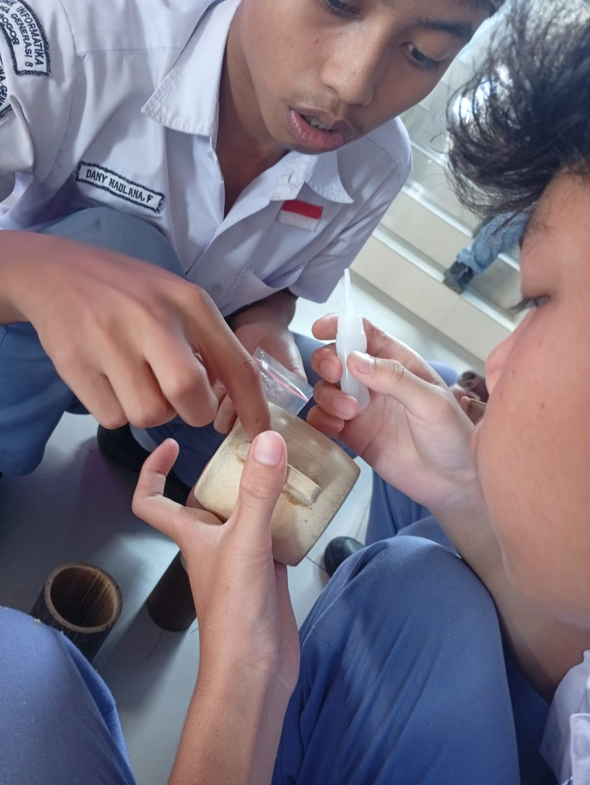

Media Promosi Digital
Informasi Brosur resmi dan Poster estetika produk kami
Membawa kedamaian animasi Ghibli ke dalam ritual minum kopi harianmu dengan cangkir bambu ramah lingkungan generasi modern.
Lihat ProdukDari alam, oleh tradisi, untuk masa depan.
Sejak berabad-abad lalu, bambu telah digunakan oleh masyarakat Asia sebagai wadah alami karena kekuatannya dan sifatnya yang menjaga kesegaran air. Di era modern ini, kami menghidupkan kembali tradisi tersebut untuk mengurangi sampah plastik dunia.
Terinspirasi dari ketenangan hutan dalam film My Neighbor Totoro dan keindahan The Tale of the Princess Kaguya, Kami ingin menciptakan produk fungsional yang membuat Anda merasa dekat dengan alam setiap hari. Kami melihat bambu bukan sekadar bahan bangunan, melainkan simbol ketangguhan yang fleksibel dan selaras dengan bumi.
"Menjadi pelopor gaya hidup ramah lingkungan yang estetik, membawa kedamaian dan keharmonisan alam ke setiap rumah."
1. Memproduksi alat minum berkualitas tinggi dari bambu pilihan berkelanjutan.
2. Menyebarkan semangat kelestarian alam melalui desain yang puitis dan fungsional.
3. Mendukung pengrajin lokal dalam mengembangkan produk ramah lingkungan.

Rp 25.000
Cangkir bambu premium, dipotong dari bambu pilihan dan dilapisi dengan food-grade water coating yang aman. Memiliki serat alami yang unik di setiap cangkirnya, memberikan sensasi minum di tengah hutan yang damai.
Cangkir kami menggunakan bahan dasar bambu berkualitas dikombinasikan dengan gelas stainless di bagian dalam agar tetap steril, awet, dan mudah dibersihkan.
Informasi Brosur resmi dan Poster estetika produk kami
Langkah-langkah pembuatan Cangkir Bambu secara handmade

1. Proses Pemotongan Bambu

2. Proses Bagian Pengukiran & Bubut

4. Proses Bagian Pengamplasan Halus

5. Proses Bagian Pengeleman komponen
6. Tahap Finishing & Quality Control

{kind=link}